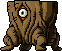

Lv. 4 · #130100
스텀프
나무의 그루터기를 닮은 몬스터로 주로 풀숲과 고원 지역에서 많이 발견된다. 뿌리가 변해서 된 다리가 매우 짧아서 움직임이 느리고, 공격력은 약하지만 의외로 체력이 강해 초보자들이 사냥하는데 시간이 걸린다. 나무 그루터기 한복판에 박힌 눈 때문에 스텀프를 처음 보는 사람들은 흠칫 놀라기도 한다. 하나뿐인 눈에서 아주 가끔 눈물을 흘리는 경우도 있다고 한다. 페리온 사람들이 귀중한 물건을 가리켜 스텀프의 눈물이라고 부르는 풍습은 여기서 유래했다.
스탯
레벨 4- HP
- 40
- MP
- 30
- EXP
- 8
- 넉백 가능 데미지
- 1+
- 물리 데미지
- 30
- 마법 데미지
- 0
- 물리 방어력
- 0
- 마법 방어력
- 10
- 속도
- -70
- 4레벨 에서의 필요 명중
- 0
- 메소
- 30.0
- 속성관계
- 불속성약점
- 체경비
- 5.00
- 형태
- 식물형
출현 지역
출현 맵 36개메이플노트 목록 분류
빅토리아 / 엘린숲세계여행
출현 맵
맵 이름을 누르면 메이플노트의 맵 정보가 열립니다.
드롭 테이블
전체 18개| 아이템 | 아이템 ID | 드롭 확률 |
|---|---|---|
| 나뭇가지 | 4000003 | 40% |
| 바짝 마른 나뭇가지 | 4031773 | 20% |
| 빨간 포션 | 2000000 | 1% |
| 활전용 화살 | 2060000 | 0.8% |
| 석궁전용 화살 | 2061000 | 0.8% |
| 초록사과 | 2010009 | 0.7% |
| 아다만티움의 원석 | 4010003 | 0.3% |
| 바둑판 | 4030009 | 0.3% |
| 에메랄드의 원석 | 4020003 | 0.2% |
| 레더 암즈 | 1482001 | 0.07% |
| 레전드 바지 | 1061014 | 0.06% |
| 브라운 미들 래더 | 1072007 | 0.01% |
| 합금 활 | 1452003 | 0.01% |
| 주노 | 1082003 | 0.01% |
| 삼각 자마다르 | 1332000 | 0.01% |
| 상의 방어력 주문서 10% | 2040402 | 0.006% |
| 망토 체력 주문서 10% | 2041008 | 0.006% |
| 피스톨 | 1492000 | 0.0005% |
조건에 맞는 드롭 아이템이 없습니다.
확률은 메이플노트에 게시된 값입니다. 아이템 이름을 누르면 원본 아이템 정보가 열립니다. 과거 버전 데이터이므로 실제 메이플랜드와 다를 수 있습니다.